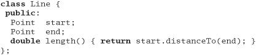
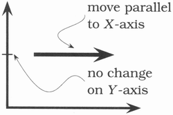

Chapter 2
A Pragmatic Approach
There are certain tips and tricks that apply at all levels of software development, ideas that are almost axiomatic, and processes that are virtually universal. However, these approaches are rarely documented as such; you'll mostly find them written down as odd sentences in discussions of design, project management, or coding.
In this chapter we'll bring these ideas and processes together. The first two sections, The Evils of Duplication and Orthogonality, are closely related. The first warns you not to duplicate knowledge throughout your systems, the second not to split any one piece of knowledge across multiple system components.
As the pace of change increases, it becomes harder and harder to keep our applications relevant. In Reversibility, we'll look at some techniques that help insulate your projects from their changing environment.
The next two sections are also related. In Tracer Bullets, we talk about a style of development that allows you to gather requirements, test designs, and implement code at the same time. If this sounds too good to be true, it is: tracer bullet developments are not always applicable. When they're not, Prototypes and Post-it Notes shows you how to use prototyping to test architectures, algorithms, interfaces, and ideas.
As computer science slowly matures, designers are producing increasingly higher-level languages. While the compiler that accepts "make it so" hasn't yet been invented, in Domain Languages we present some more modest suggestions that you can implement for yourself.
Finally, we all work in a world of limited time and resources. You can survive both of these scarcities better (and keep your bosses happier) if you get good at working out how long things will take, which we cover in Estimating.
By keeping these fundamental principles in mind during development, you can write code that's better, faster, and stronger. You can even make it look easy.
7. The Evils of Duplication
Giving a computer two contradictory pieces of knowledge was Captain James T. Kirk's preferred way of disabling a marauding artificial intelligence. Unfortunately, the same principle can be effective in bringing down your code.
As programmers, we collect, organize, maintain, and harness knowledge. We document knowledge in specifications, we make it come alive in running code, and we use it to provide the checks needed during testing.
Unfortunately, knowledge isn't stable. It changes—often rapidly. Your understanding of a requirement may change following a meeting with the client. The government changes a regulation and some business logic gets outdated. Tests may show that the chosen algorithm won't work. All this instability means that we spend a large part of our time in maintenance mode, reorganizing and reexpressing the knowledge in our systems.
Most people assume that maintenance begins when an application is released, that maintenance means fixing bugs and enhancing features. We think these people are wrong. Programmers are constantly in maintenance mode. Our understanding changes day by day. New requirements arrive as we're designing or coding. Perhaps the environment changes. Whatever the reason, maintenance is not a discrete activity, but a routine part of the entire development process.
When we perform maintenance, we have to find and change the representations of things—those capsules of knowledge embedded in the application. The problem is that it's easy to duplicate knowledge in the specifications, processes, and programs that we develop, and when we do so, we invite a maintenance nightmare—one that starts well before the application ships.
We feel that the only way to develop software reliably, and to make our developments easier to understand and maintain, is to follow what we call the DRY principle:
EVERY PIECE OF KNOWLEDGE MUST HAVE A SINGLE, UNAMBIGUOUS, AUTHORITATIVE REPRESENTATION WITHIN A SYSTEM.
Why do we call it DRY?
Tip 11
The alternative is to have the same thing expressed in two or more places. If you change one, you have to remember to change the others, or, like the alien computers, your program will be brought to its knees by a contradiction. It isn't a question of whether you'll remember: it's a question of when you'll forget.
You'll find the DRY principle popping up time and time again throughout this book, often in contexts that have nothing to do with coding. We feel that it is one of the most important tools in the Pragmatic Programmer's tool box.
In this section we'll outline the problems of duplication and suggest general strategies for dealing with it.
How Does Duplication Arise?
Most of the duplication we see falls into one of the following categories:
- Imposed duplication. Developers feel they have no choice—the environment seems to require duplication.
- Inadvertent duplication. Developers don't realize that they are duplicating information.
- Impatient duplication. Developers get lazy and duplicate because it seems easier.
- Interdeveloper duplication. Multiple people on a team (or on different teams) duplicate a piece of information.
Let's look at these four i's of duplication in more detail.
Imposed Duplication
Sometimes, duplication seems to be forced on us. Project standards may require documents that contain duplicated information, or documents that duplicate information in the code. Multiple target platforms each require their own programming languages, libraries, and development environments, which makes us duplicate shared definitions and procedures. Programming languages themselves require certain structures that duplicate information. We have all worked in situations where we felt powerless to avoid duplication. And yet often there are ways of keeping each piece of knowledge in one place, honoring the DRY principle, and making our lives easier at the same time. Here are some techniques:
Multiple representations of information. At the coding level, we often need to have the same information represented in different forms. Maybe we're writing a client-server application, using different languages on the client and server, and need to represent some shared structure on both. Perhaps we need a class whose attributes mirror the schema of a database table. Maybe you're writing a book and want to include excerpts of programs that you also will compile and test.
With a bit of ingenuity you can normally remove the need for duplication. Often the answer is to write a simple filter or code generator. Structures in multiple languages can be built from a common metadata representation using a simple code generator each time the software is built (an example of this is shown in Figure 3.4, page 106). Class definitions can be generated automatically from the online database schema, or from the metadata used to build the schema in the first place. The code extracts in this book are inserted by a preprocessor each time we format the text. The trick is to make the process active: this cannot be a one-time conversion, or we're back in a position of duplicating data.
Documentation in code. Programmers are taught to comment their code: good code has lots of comments. Unfortunately, they are never taught why code needs comments: bad code requires lots of comments.
The DRY principle tells us to keep the low-level knowledge in the code, where it belongs, and reserve the comments for other, high-level explanations. Otherwise, we're duplicating knowledge, and every change means changing both the code and the comments. The comments will inevitably become out of date, and untrustworthy comments are worse than no comments at all. (See It's All Writing, page 248, for more information on comments.)
Documentation and code. You write documentation, then you write code. Something changes, and you amend the documentation and update the code. The documentation and code both contain representations of the same knowledge. And we all know that in the heat of the moment, with deadlines looming and important clients clamoring, we tend to defer the updating of documentation.
Dave once worked on an international telex switch. Quite understandably, the client demanded an exhaustive test specification and required that the software pass all tests on each delivery. To ensure that the tests accurately reflected the specification, the team generated them programmatically from the document itself. When the client amended their specification, the test suite changed automatically. Once the team convinced the client that the procedure was sound, generating acceptance tests typically took only a few seconds.
Language issues. Many languages impose considerable duplication in the source. Often this comes about when the language separates a module's interface from its implementation. C and C++ have header files that duplicate the names and type information of exported variables, functions, and (for C++) classes. Object Pascal even duplicates this information in the same file. If you are using remote procedure calls or CORBA [URL 29], you'll duplicate interface information between the interface specification and the code that implements it.
There is no easy technique for overcoming the requirements of a language. While some development environments hide the need for header files by generating them automatically, and Object Pascal allows you to abbreviate repeated function declarations, you are generally stuck with what you're given. At least with most language-based issues, a header file that disagrees with the implementation will generate some form of compilation or linkage error. You can still get things wrong, but at least you'll be told about it fairly early on.
Think also about comments in header and implementation files. There is absolutely no point in duplicating a function or class header comment between the two files. Use the header files to document interface issues, and the implementation files to document the nitty-gritty details that users of your code don't need to know.
Inadvertent Duplication
Sometimes, duplication comes about as the result of mistakes in the design.
Let's look at an example from the distribution industry. Say our analysis reveals that, among other attributes, a truck has a type, a license number, and a driver. Similarly, a delivery route is a combination of a route, a truck, and a driver. We code up some classes based on this understanding.
But what happens when Sally calls in sick and we have to change drivers? Both Truck and DeliveryRoute contain a driver. Which one do we change? Clearly this duplication is bad. Normalize it according to the underlying business model—does a truck really have a driver as part of its underlying attribute set? Does a route? Or maybe there needs to be a third object that knits together a driver, a truck, and a route. Whatever the eventual solution, avoid this kind of unnormalized data.
There is a slightly less obvious kind of unnormalized data that occurs when we have multiple data elements that are mutually dependent. Let's look at a class representing a line:
At first sight, this class might appear reasonable. A line clearly has a start and end, and will always have a length (even if it's zero). But we have duplication. The length is defined by the start and end points: change one of the points and the length changes. It's better to make the length a calculated field:

Later on in the development process, you may choose to violate the DRY principle for performance reasons. Frequently this occurs when you need to cache data to avoid repeating expensive operations. The trick is to localize the impact. The violation is not exposed to the outside world: only the methods within the class have to worry about keeping things straight.
This example also illustrates an important issue for object-oriented languages such as Java and C++. Where possible, always use accessor functions to read and write the attributes of objects.[1] It will make it easier to add functionality, such as caching, in the future.
[1] The use of accessor functions ties in with Meyer's Uniform Access principle [Mey97b], which states that "All services offered by a module should be available through a uniform notation, which does not betray whether they are implemented through storage or through computation."
Impatient Duplication
Every project has time pressures—forces that can drive the best of us to take shortcuts. Need a routine similar to one you've written? You'll be tempted to copy the original and make a few changes. Need a value to represent the maximum number of points? If I change the header file, the whole project will get rebuilt. Maybe I should just use a literal number here; and here; and here. Need a class like one in the Java runtime? The source is available, so why not just copy it and make the changes you need (license provisions notwithstanding)?
If you feel this temptation, remember the hackneyed aphorism "shortcuts make for long delays." You may well save some seconds now, but at the potential loss of hours later. Think about the issues surrounding the Y2K fiasco. Many were caused by the laziness of developers not parameterizing the size of date fields or implementing centralized libraries of date services.
Impatient duplication is an easy form to detect and handle, but it takes discipline and a willingness to spend time up front to save pain later.
Interdeveloper Duplication
On the other hand, perhaps the hardest type of duplication to detect and handle occurs between different developers on a project. Entire sets of functionality may be inadvertently duplicated, and that duplication could go undetected for years, leading to maintenance problems. We heard firsthand of a U.S. state whose governmental computer systems were surveyed for Y2K compliance. The audit turned up more than 10,000 programs, each containing its own version of Social Security number validation.
At a high level, deal with the problem by having a clear design, a strong technical project leader (see page 228 in Pragmatic Teams), and a well-understood division of responsibilities within the design. However, at the module level, the problem is more insidious. Commonly needed functionality or data that doesn't fall into an obvious area of responsibility can get implemented many times over.
We feel that the best way to deal with this is to encourage active and frequent communication between developers. Set up forums to discuss common problems. (On past projects, we have set up private Usenet newsgroups to allow developers to exchange ideas and ask questions. This provides a nonintrusive way of communicating—even across multiple sites—while retaining a permanent history of everything said.) Appoint a team member as the project librarian, whose job is to facilitate the exchange of knowledge. Have a central place in the source tree where utility routines and scripts can be deposited. And make a point of reading other people's source code and documentation, either informally or during code reviews. You're not snooping—you're learning from them. And remember, the access is reciprocal—don't get twisted about other people poring (pawing?) through your code, either.
Tip 12
What you're trying to do is foster an environment where it's easier to find and reuse existing stuff than to write it yourself. If it isn't easy, people won't do it. And if you fail to reuse, you risk duplicating knowledge.
Related sections include:
- Orthogonality, page 34
- Text Manipulation, page 99
- Code Generators, page 102
- Refactoring, page 184
- Pragmatic Teams, page 224
- Ubiquitous Automation, page 230
- It's All Writing, page 248
8. Orthogonality
Orthogonality is a critical concept if you want to produce systems that are easy to design, build, test, and extend. However, the concept of orthogonality is rarely taught directly. Often it is an implicit feature of various other methods and techniques you learn. This is a mistake. Once you learn to apply the principle of orthogonality directly, you'll notice an immediate improvement in the quality of systems you produce.
What Is Orthogonality?
"Orthogonality" is a term borrowed from geometry. Two lines are orthogonal if they meet at right angles, such as the axes on a graph. In vector terms, the two lines are independent. Move along one of the lines, and your position projected onto the other doesn't change.

In computing, the term has come to signify a kind of independence or decoupling. Two or more things are orthogonal if changes in one do not affect any of the others. In a well-designed system, the database code will be orthogonal to the user interface: you can change the interface without affecting the database, and swap databases without changing the interface.
Before we look at the benefits of orthogonal systems, let's first look at a system that isn't orthogonal.
A Nonorthogonal System
You're on a helicopter tour of the Grand Canyon when the pilot, who made the obvious mistake of eating fish for lunch, suddenly groans and faints. Fortunately, he left you hovering 100 feet above the ground. You rationalize that the collective pitch lever[2] controls overall lift, so lowering it slightly will start a gentle descent to the ground. However, when you try it, you discover that life isn't that simple. The helicopter's nose drops, and you start to spiral down to the left. Suddenly you discover that you're flying a system where every control input has secondary effects. Lower the left-hand lever and you need to add compensating backward movement to the right-hand stick and push the right pedal. But then each of these changes affects all of the other controls again. Suddenly you're juggling an unbelievably complex system, where every change impacts all the other inputs. Your workload is phenomenal: your hands and feet are constantly moving, trying to balance all the interacting forces.
[2] Helicopters have four basic controls. The cyclic is the stick you hold in your right hand. Move it, and the helicopter moves in the corresponding direction. Your left hand holds the collective pitch lever. Pull up on this and you increase the pitch on all the blades, generating lift. At the end of the pitch lever is the throttle. Finally you have two foot pedals, which vary the amount of tail rotor thrust and so help turn the helicopter.
Helicopter controls are decidedly not orthogonal.
Benefits of Orthogonality
As the helicopter example illustrates, nonorthogonal systems are inherently more complex to change and control. When components of any system are highly interdependent, there is no such thing as a local fix.
Tip 13
Eliminate Effects Between Unrelated Things
We want to design components that are self-contained: independent, and with a single, well-defined purpose (what Yourdon and Constantine call cohesion [YC86]). When components are isolated from one another, you know that you can change one without having to worry about the rest. As long as you don't change that component's external interfaces, you can be comfortable that you won't cause problems that ripple through the entire system.
You get two major benefits if you write orthogonal systems: increased productivity and reduced risk.
Gain Productivity
- Changes are localized, so development time and testing time are reduced. It is easier to write relatively small, self-contained components than a single large block of code. Simple components can be designed, coded, unit tested, and then forgotten—there is no need to keep changing existing code as you add new code.
- An orthogonal approach also promotes reuse. If components have specific, well-defined responsibilities, they can be combined with new components in ways that were not envisioned by their original implementors. The more loosely coupled your systems, the easier they are to reconfigure and reengineer.
- There is a fairly subtle gain in productivity when you combine orthogonal components. Assume that one component does M distinct things and another does N things. If they are orthogonal and you combine them, the result does M x N things. However, if the two components are not orthogonal, there will be overlap, and the result will do less. You get more functionality per unit effort by combining orthogonal components.
Reduce Risk
An orthogonal approach reduces the risks inherent in any development.
- Diseased sections of code are isolated. If a module is sick, it is less likely to spread the symptoms around the rest of the system. It is also easier to slice it out and transplant in something new and healthy.
- The resulting system is less fragile. Make small changes and fixes to a particular area, and any problems you generate will be restricted to that area.
- An orthogonal system will probably be better tested, because it will be easier to design and run tests on its components.
- You will not be as tightly tied to a particular vendor, product, or platform, because the interfaces to these third-party components will be isolated to smaller parts of the overall development.
Let's look at some of the ways you can apply the principle of orthogonality to your work.
Project Teams
Have you noticed how some project teams are efficient, with everyone knowing what to do and contributing fully, while the members of other teams are constantly bickering and don't seem able to get out of each other's way?
Often this is an orthogonality issue. When teams are organized with lots of overlap, members are confused about responsibilities. Every change needs a meeting of the entire team, because any one of them might be affected.
How do you organize teams into groups with well-defined responsibilities and minimal overlap? There's no simple answer. It depends partly on the project and your analysis of the areas of potential change. It also depends on the people you have available. Our preference is to start by separating infrastructure from application. Each major infrastructure component (database, communications interface, middleware layer, and so on) gets its own subteam. Each obvious division of application functionality is similarly divided. Then we look at the people we have (or plan to have) and adjust the groupings accordingly.
You can get an informal measure of the orthogonality of a project team's structure. Simply see how many people need to be involved in discussing each change that is requested. The larger the number, the less orthogonal the group. Clearly, an orthogonal team is more efficient. (Having said this, we also encourage subteams to communicate constantly with each other.)
Design
Most developers are familiar with the need to design orthogonal systems, although they may use words such as modular, component-based, and layered to describe the process. Systems should be composed of a set of cooperating modules, each of which implements functionality independent of the others. Sometimes these components are organized into layers, each providing a level of abstraction. This layered approach is a powerful way to design orthogonal systems. Because each layer uses only the abstractions provided by the layers below it, you have great flexibility in changing underlying implementations without affecting code. Layering also reduces the risk of runaway dependencies between modules. You'll often see layering expressed in diagrams such as Figure 2.1 on the next page.
Figure 2.1. Typical layer diagram

There is an easy test for orthogonal design. Once you have your components mapped out, ask yourself: If I dramatically change the requirements behind a particular function, how many modules are affected? In an orthogonal system, the answer should be "one."[3] Moving a button on a GUI panel should not require a change in the database schema. Adding context-sensitive help should not change the billing subsystem.
[3] In reality, this is naive. Unless you are remarkably lucky, most real-world requirements changes will affect multiple functions in the system. However, if you analyze the change in terms of functions, each functional change should still ideally affect just one module.
Let's consider a complex system for monitoring and controlling a heating plant. The original requirement called for a graphical user interface, but the requirements were changed to add a voice response system with touchtone telephone control of the plant. In an orthogonally designed system, you would need to change only those modules associated with the user interface to handle this: the underlying logic of controlling the plant would remain unchanged. In fact, if you structure your system carefully, you should be able to support both interfaces with the same underlying code base. It's Just a View, page 157, talks about writing decoupled code using the Model-View-Controller (MVC) paradigm, which works well in this situation.
Also ask yourself how decoupled your design is from changes in the real world. Are you using a telephone number as a customer identifier? What happens when the phone company reassigns area codes? Don't rely on the properties of things you can't control.
Toolkits and Libraries
Be careful to preserve the orthogonality of your system as you introduce third-party toolkits and libraries. Choose your technologies wisely.
We once worked on a project that required that a certain body of Java code run both locally on a server machine and remotely on a client machine. The alternatives for distributing classes this way were RMI and CORBA. If a class were made remotely accessible using RMI, every call to a remote method in that class could potentially throw an exception, which means that a naive implementation would require us to handle the exception whenever our remote classes were used. Using RMI here is clearly not orthogonal: code calling our remote classes should not have to be aware of their locations. The alternative—using CORBA—did not impose that restriction: we could write code that was unaware of our classes' locations.
When you bring in a toolkit (or even a library from other members of your team), ask yourself whether it imposes changes on your code that shouldn't be there. If an object persistence scheme is transparent, then it's orthogonal. If it requires you to create or access objects in a special way, then it's not. Keeping such details isolated from your code has the added benefit of making it easier to change vendors in the future.
The Enterprise Java Beans (EJB) system is an interesting example of orthogonality. In most transaction-oriented systems, the application code has to delineate the start and end of each transaction. With EJB, this information is expressed declaratively as metadata, outside any code. The same application code can run in different EJB transaction environments with no change. This is likely to be a model for many future environments.
Another interesting twist on orthogonality is Aspect-Oriented Programming (AOP), a research project at Xerox Parc ([KLM+97] and [URL 49]). AOP lets you express in one place behavior that would otherwise be distributed throughout your source code. For example, log messages are normally generated by sprinkling explicit calls to some log function throughout your source. With AOP, you implement logging orthogonally to the things being logged. Using the Java version of AOP, you could write a log message when entering any method of class Fred by coding the aspect:

If you weave this aspect into your code, trace messages will be generated. If you don't, you'll see no messages. Either way, your original source is unchanged.
Coding
Every time you write code you run the risk of reducing the orthogonality of your application. Unless you constantly monitor not just what you are doing but also the larger context of the application, you might unintentionally duplicate functionality in some other module, or express existing knowledge twice.
There are several techniques you can use to maintain orthogonality:
- Keep your code decoupled. Write shy code—modules that don't reveal anything unnecessary to other modules and that don't rely on other modules' implementations. Try the Law of Demeter [LH89], which we discuss in Decoupling and the Law of Demeter, page 138. If you need to change an object's state, get the object to do it for you. This way your code remains isolated from the other code's implementation and increases the chances that you'll remain orthogonal.
- Avoid global data. Every time your code references global data, it ties itself into the other components that share that data. Even globals that you intend only to read can lead to trouble (for example, if you suddenly need to change your code to be multithreaded). In general, your code is easier to understand and maintain if you explicitly pass any required context into your modules. In object-oriented applications, context is often passed as parameters to objects' constructors. In other code, you can create structures containing the context and pass around references to them.
The Singleton pattern in Design Patterns [GHJV95] is a way of ensuring that there is only one instance of an object of a particular class. Many people use these singleton objects as a kind of global variable (particularly in languages, such as Java, that otherwise do not support the concept of globals). Be careful with singletons—they can also lead to unnecessary linkage. - Avoid similar functions. Often you'll come across a set of functions that all look similar—maybe they share common code at the start and end, but each has a different central algorithm. Duplicate code is a symptom of structural problems. Have a look at the Strategy pattern in Design Patterns for a better implementation.
Get into the habit of being constantly critical of your code. Look for any opportunities to reorganize it to improve its structure and orthogonality. This process is called refactoring, and it's so important that we've dedicated a section to it (see Refactoring, page 184).
Testing
An orthogonally designed and implemented system is easier to test. Because the interactions between the system's components are formalized and limited, more of the system testing can be performed at the individual module level. This is good news, because module level (or unit) testing is considerably easier to specify and perform than integration testing. In fact, we suggest that every module have its own unit test built into its code, and that these tests be performed automatically as part of the regular build process (see Code That's Easy to Test, page 189).
Building unit tests is itself an interesting test of orthogonality. What does it take to build and link a unit test? Do you have to drag in a large percentage of the rest of the system just to get a test to compile or link? If so, you've found a module that is not well decoupled from the rest of the system.
Bug fixing is also a good time to assess the orthogonality of the system as a whole. When you come across a problem, assess how localized the fix is. Do you change just one module, or are the changes scattered throughout the entire system? When you make a change, does it fix everything, or do other problems mysteriously arise? This is a good opportunity to bring automation to bear. If you use a source code control system (and you will after reading Source Code Control, page 86), tag bug fixes when you check the code back in after testing. You can then run monthly reports analyzing trends in the number of source files affected by each bug fix.
Documentation
Perhaps surprisingly, orthogonality also applies to documentation. The axes are content and presentation. With truly orthogonal documentation, you should be able to change the appearance dramatically without changing the content. Modern word processors provide style sheets and macros that help (see It's All Writing, page 248).
Living with Orthogonality
Orthogonality is closely related to the DRY principle introduced on page 27. With DRY, you're looking to minimize duplication within a system, whereas with orthogonality you reduce the interdependency among the system's components. It may be a clumsy word, but if you use the principle of orthogonality, combined closely with the DRY principle, you'll find that the systems you develop are more flexible, more understandable, and easier to debug, test, and maintain.
If you're brought into a project where people are desperately struggling to make changes, and where every change seems to cause four other things to go wrong, remember the nightmare with the helicopter. The project probably is not orthogonally designed and coded. It's time to refactor.
And, if you're a helicopter pilot, don't eat the fish....
Related sections include:
- The Evils of Duplication, page 26
- Source Code Control, page 86
- Design by Contract, page 109
- Decoupling and the Law of Demeter, page 138
- Metaprogramming, page 144
- It's Just a View, page 157
- Refactoring, page 184
- Code That's Easy to Test, page 189
- Evil Wizards, page 198
- Pragmatic Teams, page 224
- It's All Writing, page 248
Challenges
- Consider the difference between large GUI-oriented tools typically found on Windows systems and small but combinable command line utilities used at shell prompts. Which set is more orthogonal, and why? Which is easier to use for exactly the purpose for which it was intended? Which set is easier to combine with other tools to meet new challenges?
- C++ supports multiple inheritance, and Java allows a class to implement multiple interfaces. What impact does using these facilities have on orthogonality? Is there a difference in impact between using multiple inheritance and multiple interfaces? Is there a difference between using delegation and using inheritance?
Exercises
1. You are writing a class called Split, which splits input lines into fields. Which of the following two Java class signatures is the more orthogonal design?
2. Which will lead to a more orthogonal design: modeless or modal dialog boxes?
3. How about procedural languages versus object technology? Which results in a more orthogonal system?
9. Reversibility
Nothing is more dangerous than an idea if it's the only one you have.
• Emil-Auguste Chartier, Propos sur la religion, 1938
Engineers prefer simple, single solutions to problems. Math tests that allow you to proclaim with great confidence that x = 2 are much more comfortable than fuzzy, warm essays about the myriad causes of the French Revolution. Management tends to agree with the engineers: single, easy answers fit nicely on spreadsheets and project plans.
If only the real world would cooperate! Unfortunately, while x is 2 today, it may need to be 5 tomorrow, and 3 next week. Nothing is forever—and if you rely heavily on some fact, you can almost guarantee that it will change.
There is always more than one way to implement something, and there is usually more than one vendor available to provide a third-party product. If you go into a project hampered by the myopic notion that there is only one way to do it, you may be in for an unpleasant surprise. Many project teams have their eyes forcibly opened as the future unfolds:
"But you said we'd use database XYZ! We are 85% done coding the project, we can't change now!" the programmer protested. "Sorry, but our company decided to standardize on database PDQ instead—for all projects. It's out of my hands. We'll just have to recode. All of you will be working weekends until further notice."
Changes don't have to be that Draconian, or even that immediate. But as time goes by, and your project progresses, you may find yourself stuck in an untenable position. With every critical decision, the project team commits to a smaller target—a narrower version of reality that has fewer options.
By the time many critical decisions have been made, the target becomes so small that if it moves, or the wind changes direction, or a butterfly in Tokyo flaps its wings, you miss.[4] And you may miss by a huge amount.
[4] Take a nonlinear, or chaotic, system and apply a small change to one of its inputs. You may get a large and often unpredictable result. The clichéd butterfly flapping its wings in Tokyo could be the start of a chain of events that ends up generating a tornado in Texas. Does this sound like any projects you know?
The problem is that critical decisions aren't easily reversible.
Once you decide to use this vendor's database, or that architectural pattern, or a certain deployment model (client-server versus standalone, for instance), you are committed to a course of action that cannot be undone, except at great expense.
Reversibility
Many of the topics in this book are geared to producing flexible, adaptable software. By sticking to their recommendations—especially the DRY principle (page 26), decoupling (page 138), and use of metadata (page 144)—we don't have to make as many critical, irreversible decisions. This is a good thing, because we don't always make the best decisions the first time around. We commit to a certain technology only to discover we can't hire enough people with the necessary skills. We lock in a certain third-party vendor just before they get bought out by their competitor. Requirements, users, and hardware change faster than we can get the software developed.
Suppose you decide, early in the project, to use a relational database from vendor A. Much later, during performance testing, you discover that the database is simply too slow, but that the object database from vendor B is faster. With most conventional projects, you'd be out of luck. Most of the time, calls to third-party products are entangled throughout the code. But if you really abstracted the idea of a database out—to the point where it simply provides persistence as a service—then you have the flexibility to change horses in midstream.
Similarly, suppose the project begins as a client-server model, but then, late in the game, marketing decides that servers are too expensive for some clients, and they want a stand-alone version. How hard would that be for you? Since it's just a deployment issue, it shouldn't take more than a few days. If it would take longer, then you haven't thought about reversibility. The other direction is even more interesting. What if the stand-alone product you are making needs to be deployed in a client-server or n-tier fashion? That shouldn't be hard either.
The mistake lies in assuming that any decision is cast in stone—and in not preparing for the contingencies that might arise. Instead of carving decisions in stone, think of them more as being written in the sand at the beach. A big wave can come along and wipe them out at any time.
Tip 14
Flexible Architecture
While many people try to keep their code flexible, you also need to think about maintaining flexibility in the areas of architecture, deployment, and vendor integration.
Technologies such as CORBA can help insulate portions of a project from changes in development language or platform. Is the performance of Java on that platform not up to expectations? Recode the client in C++, and nothing else needs to change. Is the rules engine in C++ not flexible enough? Switch over to a Smalltalk version. With a CORBA architecture, you have to take a hit only for the component you are replacing; the other components shouldn't be affected.
Are you developing for Unix? Which one? Do you have all of the portability concerns addressed? Are you developing for a particular version of Windows? Which one—3.1, 95, 98, NT, CE, or 2000? How hard will it be to support other versions? If you keep decisions soft and pliable, it won't be hard at all. If you have poor encapsulation, high coupling, and hard-coded logic or parameters in the code, it might be impossible.
Not sure how marketing wants to deploy the system? Think about it up front and you can support a stand-alone, client-server, or n-tier model just by changing a configuration file. We've written programs that do just that.
Normally, you can simply hide a third-party product behind a well-defined, abstract interface. In fact, we've always been able to do so on any project we've worked on. But suppose you couldn't isolate it that cleanly. What if you had to sprinkle certain statements liberally throughout the code? Put that requirement in metadata, and use some automatic mechanism, such as Aspects (see page 39) or Perl, to insert the necessary statements into the code itself. Whatever mechanism you use, make it reversible. If something is added automatically, it can be taken out automatically as well.
No one knows what the future may hold, especially not us! So enable your code to rock-n-roll: to "rock on" when it can, to roll with the punches when it must.
Related sections include:
- Decoupling and the Law of Demeter, page 138
- Metaprogramming, page 144
- It's Just a View, page 157
Challenges
- Time for a little quantum mechanics with Schrödinger's cat. Suppose you have a cat in a closed box, along with a radioactive particle. The particle has exactly a 50% chance of fissioning into two. If it does, the cat will be killed. If it doesn't, the cat will be okay. So, is the cat dead or alive? According to Schrödinger, the correct answer is both. Every time a sub-nuclear reaction takes place that has two possible outcomes, the universe is cloned. In one, the event occurred, in the other it didn't. The cat's alive in one universe, dead in another. Only when you open the box do you know which universe you are in.
No wonder coding for the future is difficult.
But think of code evolution along the same lines as a box full of Schrödinger's cats: every decision results in a different version of the future. How many possible futures can your code support? Which ones are more likely? How hard will it be to support them when the time comes?
Dare you open the box?
10. Tracer Bullets
Ready, fire, aim...
There are two ways to fire a machine gun in the dark.[5] You can find out exactly where your target is (range, elevation, and azimuth). You can determine the environmental conditions (temperature, humidity, air pressure, wind, and so on). You can determine the precise specifications of the cartridges and bullets you are using, and their interactions with the actual gun you are firing. You can then use tables or a firing computer to calculate the exact bearing and elevation of the barrel. If everything works exactly as specified, your tables are correct, and the environment doesn't change, your bullets should land close to their target.
[5] To be pedantic, there are many ways of firing a machine gun in the dark, including closing your eyes and spraying out bullets. But this is an analogy, and we're allowed to take liberties.
Or you could use tracer bullets.
Tracer bullets are loaded at intervals on the ammo belt alongside regular ammunition. When they're fired, their phosphorus ignites and leaves a pyrotechnic trail from the gun to whatever they hit. If the tracers are hitting the target, then so are the regular bullets.
Not surprisingly, tracer bullets are preferred to the labor of calculation. The feedback is immediate, and because they operate in the same environment as the real ammunition, external effects are minimized.
The analogy might be violent, but it applies to new projects, particularly when you're building something that hasn't been built before. Like the gunners, you're trying to hit a target in the dark. Because your users have never seen a system like this before, their requirements may be vague. Because you may be using algorithms, techniques, languages, or libraries you aren't familiar with, you face a large number of unknowns. And because projects take time to complete, you can pretty much guarantee the environment you're working in will change before you're done.
The classic response is to specify the system to death. Produce reams of paper itemizing every requirement, tying down every unknown, and constraining the environment. Fire the gun using dead reckoning. One big calculation up front, then shoot and hope.
Pragmatic Programmers, however, tend to prefer using tracer bullets.
Code That Glows in the Dark
Tracer bullets work because they operate in the same environment and under the same constraints as the real bullets. They get to the target fast, so the gunner gets immediate feedback. And from a practical standpoint they're a relatively cheap solution.
To get the same effect in code, we're looking for something that gets us from a requirement to some aspect of the final system quickly, visibly, and repeatably.
Tip 15
Use Tracer Bullets to Find the Target
We once undertook a complex client-server database marketing project. Part of its requirement was the ability to specify and execute temporal queries. The servers were a range of relational and specialized databases. The client GUI, written in Object Pascal, used a set of C libraries to provide an interface to the servers. The user's query was stored on the server in a Lisp-like notation before being converted to optimized SQL just prior to execution. There were many unknowns and many different environments, and no one was too sure how the GUI should behave.
This was a great opportunity to use tracer code. We developed the framework for the front end, libraries for representing the queries, and a structure for converting a stored query into a database-specific query. Then we put it all together and checked that it worked. For that initial build, all we could do was submit a query that listed all the rows in a table, but it proved that the UI could talk to the libraries, the libraries could serialize and unserialize a query, and the server could generate SQL from the result. Over the following months we gradually fleshed out this basic structure, adding new functionality by augmenting each component of the tracer code in parallel. When the UI added a new query type, the library grew and the SQL generation was made more sophisticated.
Tracer code is not disposable: you write it for keeps. It contains all the error checking, structuring, documentation, and self-checking that any piece of production code has. It simply is not fully functional. However, once you have achieved an end-to-end connection among the components of your system, you can check how close to the target you are, adjusting if necessary. Once you're on target, adding functionality is easy.
Tracer development is consistent with the idea that a project is never finished: there will always be changes required and functions to add. It is an incremental approach.
The conventional alternative is a kind of heavy engineering approach: code is divided into modules, which are coded in a vacuum. Modules are combined into subassemblies, which are then further combined, until one day you have a complete application. Only then can the application as a whole be presented to the user and tested.
The tracer code approach has many advantages:
- Users get to see something working early. If you have successfully communicated what you are doing (see Great Expectations, page 255), your users will know they are seeing something immature. They won't be disappointed by a lack of functionality; they'll be ecstatic to see some visible progress toward their system. They also get to contribute as the project progresses, increasing their buy-in. These same users will likely be the people who'll tell you how close to the target each iteration is.
- Developers build a structure to work in. The most daunting piece of paper is the one with nothing written on it. If you have worked out all the end-to-end interactions of your application, and have embodied them in code, then your team won't need to pull as much out of thin air. This makes everyone more productive, and encourages consistency.
- You have an integration platform. As the system is connected end-to-end, you have an environment to which you can add new pieces of code once they have been unit-tested. Rather than attempting a big-bang integration, you'll be integrating every day (often many times a day). The impact of each new change is more apparent, and the interactions are more limited, so debugging and testing are faster and more accurate.
- You have something to demonstrate. Project sponsors and top brass have a tendency to want to see demos at the most inconvenient times. With tracer code, you'll always have something to show them.
- You have a better feel for progress. In a tracer code development, developers tackle use cases one by one. When one is done, they move to the next. It is far easier to measure performance and to demonstrate progress to your user. Because each individual development is smaller, you avoid creating those monolithic blocks of code that are reported as 95% complete week after week.
Tracer Bullets Don't Always Hit Their Target
Tracer bullets show what you're hitting. This may not always be the target. You then adjust your aim until they're on target. That's the point.
It's the same with tracer code. You use the technique in situations where you're not 100% certain of where you're going. You shouldn't be surprised if your first couple of attempts miss: the user says "that's not what I meant," or data you need isn't available when you need it, or performance problems seem likely. Work out how to change what you've got to bring it nearer the target, and be thankful that you've used a lean development methodology. A small body of code has low inertia—it is easy and quick to change. You'll be able to gather feedback on your application and generate a new, more accurate version faster and at less cost than with any other method. And because every major application component is represented in your tracer code, your users can be confident that what they're seeing is based on reality, not just a paper specification.
Tracer Code versus Prototyping
You might think that this tracer code concept is nothing more than prototyping under an aggressive name. There is a difference. With a prototype, you're aiming to explore specific aspects of the final system. With a true prototype, you will throw away whatever you lashed together when trying out the concept, and recode it properly using the lessons you've learned.
For example, say you're producing an application that helps shippers determine how to pack odd-sized boxes into containers. Among other problems, the user interface needs to be intuitive and the algorithms you use to determine optimal packing are very complex.
You could prototype a user interface for your end users in a GUI tool. You code only enough to make the interface responsive to user actions. Once they've agreed to the layout, you might throw it away and recode it, this time with the business logic behind it, using the target language. Similarly, you might want to prototype a number of algorithms that perform the actual packing. You might code functional tests in a high-level, forgiving language such as Perl, and code low-level performance tests in something closer to the machine. In any case, once you'd made your decision, you'd start again and code the algorithms in their final environment, interfacing to the real world. This is prototyping, and it is very useful.
The tracer code approach addresses a different problem. You need to know how the application as a whole hangs together. You want to show your users how the interactions will work in practice, and you want to give your developers an architectural skeleton on which to hang code. In this case, you might construct a tracer consisting of a trivial implementation of the container packing algorithm (maybe something like first-come, first-served) and a simple but working user interface. Once you have all the components in the application plumbed together, you have a framework to show your users and your developers. Over time, you add to this framework with new functionality, completing stubbed routines. But the framework stays intact, and you know the system will continue to behave the way it did when your first tracer code was completed.
The distinction is important enough to warrant repeating. Prototyping generates disposable code. Tracer code is lean but complete, and forms part of the skeleton of the final system. Think of prototyping as the reconnaissance and intelligence gathering that takes place before a single tracer bullet is fired.
Related sections include:
- Good-Enough Software, page 9
- Prototypes and Post-it Notes, page 53
- The Specification Trap, page 217
- Great Expectations, page 255
11. Prototypes and Post-it Notes
Many different industries use prototypes to try out specific ideas; prototyping is much cheaper than full-scale production. Car makers, for example, may build many different prototypes of a new car design. Each one is designed to test a specific aspect of the car—the aerodynamics, styling, structural characteristics, and so on. Perhaps a clay model will be built for wind tunnel testing, maybe a balsa wood and duct tape model will do for the art department, and so on. Some car companies take this a step further, and now do a great deal of modeling work on the computer, reducing costs even further. In this way, risky or uncertain elements can be tried out without committing to building the real item.
We build software prototypes in the same fashion, and for the same reasons—to analyze and expose risk, and to offer chances for correction at a greatly reduced cost. Like the car makers, we can target a prototype to test one or more specific aspects of a project.
We tend to think of prototypes as code-based, but they don't always have to be. Like the car makers, we can build prototypes out of different materials. Post-it notes are great for prototyping dynamic things such as workflow and application logic. A user interface can be prototyped as a drawing on a whiteboard, as a nonfunctional mock-up drawn with a paint program, or with an interface builder.
Prototypes are designed to answer just a few questions, so they are much cheaper and faster to develop than applications that go into production. The code can ignore unimportant details—unimportant to you at the moment, but probably very important to the user later on. If you are prototyping a GUI, for instance, you can get away with incorrect results or data. On the other hand, if you're just investigating computational or performance aspects, you can get away with a pretty poor GUI, or perhaps even no GUI at all.
But if you find yourself in an environment where you cannot give up the details, then you need to ask yourself if you are really building a prototype at all. Perhaps a tracer bullet style of development would be more appropriate in this case (see Tracer Bullets, page 48).
Things to Prototype
What sorts of things might you choose to investigate with a prototype? Anything that carries risk. Anything that hasn't been tried before, or that is absolutely critical to the final system. Anything unproven, experimental, or doubtful. Anything you aren't comfortable with. You can prototype
- Architecture
- New functionality in an existing system
- Structure or contents of external data
- Third-party tools or components
- Performance issues
- User interface design
Prototyping is a learning experience. Its value lies not in the code produced, but in the lessons learned. That's really the point of prototyping.
Tip 16
How to Use Prototypes
When building a prototype, what details can you ignore?
- Correctness. You may be able to use dummy data where appropriate.
- Completeness. The prototype may function only in a very limited sense, perhaps with only one preselected piece of input data and one menu item.
- Robustness. Error checking is likely to be incomplete or missing entirely. If you stray from the predefined path, the prototype may crash and burn in a glorious display of pyrotechnics. That's okay.
- Style. It is painful to admit this in print, but prototype code probably doesn't have much in the way of comments or documentation. You may produce reams of documentation as a result of your experience with the prototype, but comparatively very little on the prototype system itself.
Since a prototype should gloss over details, and focus in on specific aspects of the system being considered, you may want to implement prototypes using a very high-level language—higher than the rest of the project (maybe a language such as Perl, Python, or Tcl). A high-level scripting language lets you defer many details (including specifying data types) and still produce a functional (albeit incomplete or slow) piece of code.[6] If you need to prototype user interfaces, investigate tools such as Tcl/Tk, Visual Basic, Powerbuilder, or Delphi.
[6] If you are investigating absolute (instead of relative) performance, you will need to stick to a language that is close in performance to the target language.
Scripting languages work well as the "glue" to combine low-level pieces into new combinations. Under Windows, Visual Basic can glue together COM controls. More generally, you can use languages such as Perl and Python to bind together low-level C libraries—either by hand, or automatically with tools such as the freely available SWIG [URL 28]. Using this approach, you can rapidly assemble existing components into new configurations to see how things work.
Prototyping Architecture
Many prototypes are constructed to model the entire system under consideration. As opposed to tracer bullets, none of the individual modules in the prototype system need to be particularly functional. In fact, you may not even need to code in order to prototype architecture—you can prototype on a whiteboard, with Post-it notes or index cards. What you are looking for is how the system hangs together as a whole, again deferring details. Here are some specific areas you may want to look for in the architectural prototype:
- Are the responsibilities of the major components well defined and appropriate?
- Are the collaborations between major components well defined?
- Is coupling minimized?
- Can you identify potential sources of duplication?
- Are interface definitions and constraints acceptable?
- Does every module have an access path to the data it needs during execution? Does it have that access when it needs it?
This last item tends to generate the most surprises and the most valuable results from the prototyping experience.
How Not to Use Prototypes
Before you embark on any code-based prototyping, make sure that everyone understands that you are writing disposable code. Prototypes can be deceptively attractive to people who don't know that they are just prototypes. You must make it very clear that this code is disposable, incomplete, and unable to be completed.
It's easy to become misled by the apparent completeness of a demonstrated prototype, and project sponsors or management may insist on deploying the prototype (or its progeny) if you don't set the right expectations. Remind them that you can build a great prototype of a new car out of balsa wood and duct tape, but you wouldn't try to drive it in rush-hour traffic!
If you feel there is a strong possibility in your environment or culture that the purpose of prototype code may be misinterpreted, you may be better off with the tracer bullet approach. You'll end up with a solid framework on which to base future development.
When used properly, a prototype can save you huge amounts of time, money, pain, and suffering by identifying and correcting potential problem spots early in the development cycle—the time when fixing mistakes is both cheap and easy.
Related sections include:
- The Cat Ate My Source Code, page 2
- Communicate!, page 18
- Tracer Bullets, page 48
- Great Expectations, page 255
Exercises
4. Marketing would like to sit down and brainstorm a few Web-page designs with you. They are thinking of clickable image maps to take you to other pages, and so on. But they can't decide on a model for the image—maybe it's a car, or a phone, or a house. You have a list of target pages and content; they'd like to see a few prototypes. Oh, by the way, you have 15 minutes. What tools might you use?
12. Domain Languages
The limits of language are the limits of one's world.
• Ludwig Wittgenstein
Computer languages influence how you think about a problem, and how you think about communicating. Every language comes with a list of features—buzzwords such as static versus dynamic typing, early versus late binding, inheritance models (single, multiple, or none)—all of which may suggest or obscure certain solutions. Designing a solution with Lisp in mind will produce different results than a solution based on C-style thinking, and vice versa. Conversely, and we think more importantly, the language of the problem domain may also suggest a programming solution.
We always try to write code using the vocabulary of the application domain (see The Requirements Pit, page 210, where we suggest using a project glossary). In some cases, we can go to the next level and actually program using the vocabulary, syntax, and semantics—the language—of the domain.
When you listen to users of a proposed system, they might be able to tell you exactly how the system should work:
Listen for transactions defined by ABC Regulation 12.3 on a set of X.25 lines, translate them to XYZ Company's format 43B, retransmit them on the satellite uplink, and store for future analysis.
If your users have a number of such well-bounded statements, you can invent a mini-language tailored to the application domain that expresses exactly what they want:
From X25LINE1 (Format=ABC123) {
Put TELSTAR1 (Format=XYZ43B);
Store DB;
}
This language need not be executable. Initially, it could be simply a way of capturing the user's requirements—a specification. However, you may want to consider taking this a step further and actually implementing the language. Your specification has become executable code.
After you've written the application, the users give you a new requirement: transactions with negative balances shouldn't be stored, and should be sent back on the X.25 lines in the original format:
That was easy, wasn't it? With the proper support in place, you can program much closer to the application domain. We're not suggesting that your end users actually program in these languages. Instead, you're giving yourself a tool that lets you work closer to their domain.
Tip 17
Program Close to the Problem Domain
Whether it's a simple language to configure and control an application program, or a more complex language to specify rules or procedures, we think you should consider ways of moving your project closer to the problem domain. By coding at a higher level of abstraction, you are free to concentrate on solving domain problems, and can ignore petty implementation details.
Remember that there are many users of an application. There's the end user, who understands the business rules and the required outputs. There are also secondary users: operations staff, configuration and test managers, support and maintenance programmers, and future generations of developers. Each of these users has their own problem domain, and you can generate mini-environments and languages for all of them.
Implementing a Mini-Language
At its simplest, a mini-language may be in a line-oriented, easily parsed format. In practice, we probably use this form more than any other. It can be parsed simply using switch statements, or using regular expressions in scripting languages such as Perl. The answer to Exercise 5 on page 281 shows a simple implementation in C.
You can also implement a more complex language, with a more formal syntax. The trick here is to define the syntax first using a notation such as BNF.[7] Once you have your grammar specified, it is normally trivial to convert it into the input syntax for a parser generator. C and C++ programmers have been using yacc (or its freely available implementation, bison [URL 27]) for years. These programs are documented in detail in the book Lex and Yacc [LMB92]. Java programmers can try javaCC, which can be found at [URL 26]. The answer to Exercise 7 on page 282 shows a parser written using bison. As it shows, once you know the syntax, it's really not a lot of work to write simple mini-languages.
[7] BNF, or Backus-Naur Form, lets you specify context-free grammars recursively. Any good book on compiler construction or parsing will cover BNF in (exhaustive) detail.
There's another way of implementing a mini-language: extend an existing one. For example, you could integrate application-level functionality with (say) Python [URL 9] and write something like[8]
[8] Thanks to Eric Vought for this example.
record = X25LINE1.get(format=ABC123)
if (record.balance < 0):
X25LINE1.put(record, format=ABC123)
else:
TELSTAR1.put(record, format=XYZ43B)
DB.store(record)
Data Languages and Imperative Languages
The languages you implement can be used in two different ways.
Data languages produce some form of data structure used by an application. These languages are often used to represent configuration information.
For example, the sendmail program is used throughout the world for routing e-mail over the Internet. It has many excellent features and benefits, which are controlled by a thousand-line configuration file, written using sendmail's own configuration language:
Mlocal, P=/usr/bin/procmail,
F=lsDFMAw5 :/|@qSPfhn9,
S=10/30, R=20/40,
T=DNS/RFC822/X-Unix,
A=procmail -Y -a $h -d $u
Obviously, readability is not one of sendmail's strengths.
For years, Microsoft has been using a data language that can describe menus, widgets, dialog boxes, and other Windows resources. Figure 2.2 on the next page shows an excerpt from a typical resource file. This is far easer to read than the sendmail example, but it is used in exactly the same way—it is compiled to generate a data structure.
Figure 2.2. Windows .rc file
Imperative languages take this a step further. Here the language is actually executed, and so can contain statements, control constructs, and the like (such as the script on page 58).
You can also use your own imperative languages to ease program maintenance. For example, you may be asked to integrate information from a legacy application into your new GUI development. A common way of achieving this is by screen scraping; your application connects to the mainframe application as if it were a regular human user, issuing keystrokes and "reading" the responses it gets back. You could script the interaction using a mini-language.[9]
[9] In fact, you can buy tools that support just this kind of scripting. You can also investigate open-source packages such as Expect, which provide similar capabilities [URL 24].
When the application determines it is time to enter a Social Security number, it invokes the interpreter on this script, which then controls the transaction. If the interpreter is embedded within the application, the two can even share data directly (for example, via a callback mechanism).
Here you're programming in the maintenance programmer's domain. When the mainframe application changes, and the fields move around, the programmer can simply update your high-level description, rather than groveling around in the details of C code.
Stand-Alone and Embedded Languages
A mini-language doesn't have to be used directly by the application to be useful. Many times we may use a specification language to create artifacts (including metadata) that are compiled, read-in, or otherwise used by the program itself (see Metaprogramming, page 144).
For example, on page 100 we describe a system in which we used Perl to generate a large number of derivations from an original schema specification. We invented a common language to express the database schema, and then generated all the forms of it we needed—SQL, C, Web pages, XML, and others. The application didn't use the specification directly, but it relied on the output produced from it.
It is common to embed high-level imperative languages directly into your application, so that they execute when your code runs. This is clearly a powerful capability; you can change your application's behavior by changing the scripts it reads, all without compiling. This can significantly simplify maintenance in a dynamic application domain.
Easy Development or Easy Maintenance?
We've looked at several different grammars, ranging from simple line-oriented formats to more complex grammars that look like real languages. Since it takes extra effort to implement, why would you choose a more complex grammar?
The trade-off is extendibility and maintenance. While the code for parsing a "real" language may be harder to write, it will be much easier for people to understand, and to extend in the future with new features and functionality. Languages that are too simple may be easy to parse, but can be cryptic—much like the sendmail example on page 60.
Given that most applications exceed their expected lifetimes, you're probably better off biting the bullet and adopting the more complex and readable language up front. The initial effort will be repaid many times in reduced support and maintenance costs.
Related sections include:
- Metaprogramming, page 144
Challenges
- Could some of the requirements of your current project be expressed in a domain-specific language? Would it be possible to write a compiler or translator that could generate most of the code required?
- If you decide to adopt mini-languages as a way of programming closer to the problem domain, you're accepting that some effort will be required to implement them. Can you see ways in which the framework you develop for one project can be reused in others?
Exercises
5. We want to implement a mini-language to control a simple drawing package (perhaps a turtle-graphics system). The language consists of single-letter commands. Some commands are followed by a single number. For example, the following input would draw a rectangle.
6. Design a BNF grammar to parse a time specification. All of the following examples should be accepted.
4pm, 7:38pm, 23:42, 3:16, 3:16am
7. Implement a parser for the BNF grammar in Exercise 6 using yacc, bison, or a similar parser-generator.
8. Implement the time parser using Perl. [Hint: Regular expressions make good parsers.]
13. Estimating
Quick! How long will it take to send War and Peace over a 56k modem line? How much disk space will you need for a million names and addresses? How long does a 1,000-byte block take to pass through a router? How many months will it take to deliver your project?
At one level, these are all meaningless questions—they are all missing information. And yet they can all be answered, as long as you are comfortable estimating. And, in the process of producing an estimate, you'll come to understand more about the world your programs inhabit.
By learning to estimate, and by developing this skill to the point where you have an intuitive feel for the magnitudes of things, you will be able to show an apparent magical ability to determine their feasibility. When someone says "we'll send the backup over an ISDN line to the central site," you'll be able to know intuitively whether this is practical. When you're coding, you'll be able to know which subsystems need optimizing and which ones can be left alone.
Tip 18
As a bonus, at the end of this section we'll reveal the single correct answer to give whenever anyone asks you for an estimate.
How Accurate Is Accurate Enough?
To some extent, all answers are estimates. It's just that some are more accurate than others. So the first question you have to ask yourself when someone asks you for an estimate is the context in which your answer will be taken. Do they need high accuracy, or are they looking for a ballpark figure?
- If your grandmother asks when you will arrive, she's probably wondering whether to make you lunch or dinner. On the other hand, a diver trapped underwater and running out of air is probably interested in an answer down to the second.
- What's the value of π? If you're wondering how much edging to buy to put around a circular flower bed, then "3" is probably good enough.[10] If you're in school, then maybe "22/7" is a good approximation. If you're in NASA, then maybe 12 decimal places will do.
[10] "3" is also apparently good enough if you are a legislator. In 1897, Indiana State Legislature House Bill No. 246 attempted to decree that henceforth π should have the value of "3". The Bill was tabled indefinitely at its second reading when a mathematics professor pointed out that their powers did not quite extend to passing laws of nature.
One of the interesting things about estimating is that the units you use make a difference in the interpretation of the result. If you say that something will take about 130 working days, then people will be expecting it to come in pretty close. However, if you say "Oh, about six months," then they know to look for it any time between five and seven months from now. Both numbers represent the same duration, but "130 days" probably implies a higher degree of accuracy than you feel. We recommend that you scale time estimates as follows:
So, if after doing all the necessary work, you decide that a project will take 125 working days (25 weeks), you might want to deliver an estimate of "about six months."
The same concepts apply to estimates of any quantity: choose the units of your answer to reflect the accuracy you intend to convey.
Where Do Estimates Come From?
All estimates are based on models of the problem. But before we get too deeply into the techniques of building models, we have to mention a basic estimating trick that always gives good answers: ask someone who's already done it. Before you get too committed to model building, cast around for someone who's been in a similar situation in the past.
See how their problem got solved. It's unlikely you'll ever find an exact match, but you'd be surprised how many times you can successfully draw on other's experiences.
Understand What's Being Asked
The first part of any estimation exercise is building an understanding of what's being asked. As well as the accuracy issues discussed above, you need to have a grasp of the scope of the domain. Often this is implicit in the question, but you need to make it a habit to think about the scope before starting to guess. Often, the scope you choose will form part of the answer you give: "Assuming there are no traffic accidents and there's gas in the car, I should be there in 20 minutes."
Build a Model of the System
This is the fun part of estimating. From your understanding of the question being asked, build a rough and ready bare-bones mental model. If you're estimating response times, your model may involve a server and some kind of arriving traffic. For a project, the model may be the steps that your organization uses during development, along with a very rough picture of how the system might be implemented.
Model building can be both creative and useful in the long term. Often, the process of building the model leads to discoveries of underlying patterns and processes that weren't apparent on the surface. You may even want to reexamine the original question: "You asked for an estimate to do X. However, it looks like Y, a variant of X, could be done in about half the time, and you lose only one feature."
Building the model introduces inaccuracies into the estimating process. This is inevitable, and also beneficial. You are trading off model simplicity for accuracy. Doubling the effort on the model may give you only a slight increase in accuracy. Your experience will tell you when to stop refining.
Break the Model into Components
Once you have a model, you can decompose it into components. You'll need to discover the mathematical rules that describe how these components interact. Sometimes a component contributes a single value that is added into the result. Some components may supply multiplying factors, while others may be more complicated (such as those that simulate the arrival of traffic at a node).
You'll find that each component will typically have parameters that affect how it contributes to the overall model. At this stage, simply identify each parameter.
Give Each Parameter a Value
Once you have the parameters broken out, you can go through and assign each one a value. You expect to introduce some errors in this step. The trick is to work out which parameters have the most impact on the result, and concentrate on getting them about right. Typically, parameters whose values are added into a result are less significant than those that are multiplied or divided. Doubling a line speed may double the amount of data received in an hour, while adding a 5 ms transit delay will have no noticeable effect.
You should have a justifiable way of calculating these critical parameters. For the queuing example, you might want to measure the actual transaction arrival rate of the existing system, or find a similar system to measure. Similarly, you could measure the current time taken to serve a request, or come up with an estimate using the techniques described in this section. In fact, you'll often find yourself basing an estimate on other subestimates. This is where your largest errors will creep in.
Calculate the Answers
Only in the simplest of cases will an estimate have a single answer. You might be happy to say "I can walk five cross-town blocks in 15 minutes." However, as the systems get more complex, you'll want to hedge your answers. Run multiple calculations, varying the values of the critical parameters, until you work out which ones really drive the model. A spreadsheet can be a big help. Then couch your answer in terms of these parameters. "The response time is roughly three quarters of a second if the system has a SCSI bus and 64MB memory, and one second with 48MB memory." (Notice how "three quarters of a second" conveys a different feeling of accuracy than 750 ms.)
During the calculation phase, you may start getting answers that seem strange. Don't be too quick to dismiss them. If your arithmetic is correct, your understanding of the problem or your model is probably wrong. This is valuable information.
Keep Track of Your Estimating Prowess
We think it's a great idea to record your estimates so you can see how close you were. If an overall estimate involved calculating subestimates, keep track of these as well. Often you'll find your estimates are pretty good—in fact, after a while, you'll come to expect this.
When an estimate turns out wrong, don't just shrug and walk away. Find out why it differed from your guess. Maybe you chose some parameters that didn't match the reality of the problem. Maybe your model was wrong. Whatever the reason, take some time to uncover what happened. If you do, your next estimate will be better.
Estimating Project Schedules
The normal rules of estimating can break down in the face of the complexities and vagaries of a sizable application development. We find that often the only way to determine the timetable for a project is by gaining experience on that same project. This needn't be a paradox if you practice incremental development, repeating the following steps.
- Check requirements
- Analyze risk
- Design, implement, integrate
- Validate with the users
Initially, you may have only a vague idea of how many iterations will be required, or how long they may be. Some methods require you to nail this down as part of the initial plan, but for all but the most trivial of projects this is a mistake. Unless you are doing an application similar to a previous one, with the same team and the same technology, you'd just be guessing.
So you complete the coding and testing of the initial functionality and mark this as the end of the first increment. Based on that experience, you can refine your initial guess on the number of iterations and what can be included in each. The refinement gets better and better each time, and confidence in the schedule grows along with it.
Tip 19
Iterate the Schedule with the Code
This may not be popular with management, who typically want a single, hard-and-fast number before the project even starts. You'll have to help them understand that the team, their productivity, and the environment will determine the schedule. By formalizing this, and refining the schedule as part of each iteration, you'll be giving them the most accurate scheduling estimates you can.
What to Say When Asked for an Estimate
You say "I'll get back to you."
You almost always get better results if you slow the process down and spend some time going through the steps we describe in this section. Estimates given at the coffee machine will (like the coffee) come back to haunt you.
Related sections include:
- Algorithm Speed, page 177
Challenges
- Start keeping a log of your estimates. For each, track how accurate you turned out to be. If your error was greater than 50%, try to find out where your estimate went wrong.
Exercises
9. You are asked "Which has a higher bandwidth: a 1Mbps communications line or a person walking between two computers with a full 4GB tape in their pocket?" What constraints will you put on your answer to ensure that the scope of your response is correct? (For example, you might say that the time taken to access the tape is ignored.)
10. So, which has the higher bandwidth?